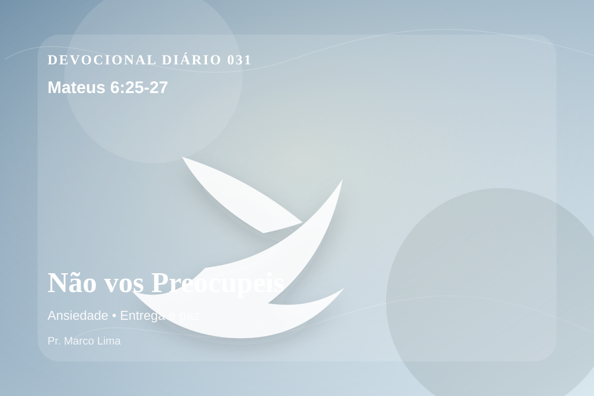

Não vos Preocupeis
Por isso vos digo: Não estejais ansiosos quanto à vossa vida, pelo que haveis de comer, ou pelo que haveis de beber; nem, quanto ao vosso corpo, pelo que haveis de vestir. Não é a vida mais do que o alimento, e o corpo mais do que o vestuário? Olhai para as aves do céu, que não semeiam, nem ceifam, nem ajuntam em celeiros; e vosso Pai celestial as alimenta. Não valeis vós muito mais do que elas? Ora, qual de vós, por mais ansioso que esteja, pode acrescentar um côvado à sua estatura?
Pensamento
Hoje, Mateus 6:25-27 não deve ser lido como uma frase isolada, mas como uma Palavra de Deus para alcançar a consciência e reorganizar a vida diante de Cristo.
Jesus confronta a ansiedade mostrando o cuidado do Pai. A preocupação tenta ocupar o lugar da confiança, mas o discípulo aprende a descansar em quem sustenta a criação.
O tema de ansiedade precisa ser recebido com simplicidade e seriedade. Esse ensino precisa descer da mente para a prática. A ansiedade tenta deslocar Deus do centro da confiança e colocar o peso da vida sobre os ombros humanos. A Escritura conduz o coração de volta à oração, à entrega e à certeza de que o Pai governa até aquilo que não conseguimos controlar.
Pergunte com honestidade: tenho obedecido a Deus nessa área ou apenas concordado com o texto? A fé bíblica não se contenta com admiração; ela se expressa em arrependimento, confiança e passos concretos.
Arrependimento não é apenas sentir peso na consciência; é voltar-se para Deus, abandonar o caminho que entristece o Senhor e confiar que a graça de Cristo é suficiente para perdoar e transformar.
Este é o evangelho que sustenta toda aplicação: Jesus Cristo morreu pelos pecadores, ressuscitou em vitória e chama cada pessoa a responder com fé, arrependimento e uma vida rendida ao Seu senhorio.
O evangelho é a resposta mais profunda para essa necessidade: Jesus morreu pelos nossos pecados, ressuscitou e chama pecadores ao arrependimento e à vida nova.
Hoje, escolha uma atitude pequena e verificável: uma oração honesta, uma conversa corrigida, um pedido de perdão, uma renúncia ou uma decisão de obedecer sem adiar.
Para Praticar Hoje
- Leia Mateus 6:25-27 lentamente e destaque uma palavra ou expressão central do texto.
- Confesse a Deus um pecado, resistência ou frieza espiritual que esta Palavra revelou.
- Declare sua fé em Jesus Cristo e pratique hoje uma atitude concreta de arrependimento e obediência.
Oração
Pai, onde a ansiedade aperta, lembra-me que Tu estás perto. Mateus 6:25-27 me ensina a entregar o que me preocupa em Tuas mãos, porque Tu cuidas de mim mais do que eu cuido de mim mesmo. Acalma meu coração e me dá a Tua paz.
{kind=link}